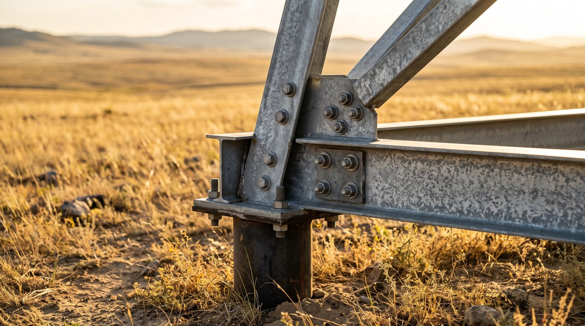

Технология
Как устроен наш каркас
Оцинкованный тонкостенный профиль до 3,5 мм в связке с чёрным металлом, свайный фундамент без бетона и 100% болтовая сборка. Ниже — из чего это состоит и почему работает на севере Казахстана.
Линейка профилей
Три профиля — три задачи
Толщина каждого подбирается под расчётную нагрузку: чем выше снеговая нагрузка и пролёт, тем толще металл в несущих элементах. Максимум линии — 3,5 мм.
Sigma
профиль повышенной жёсткости
ГДЕ РАБОТАЕТнесущие рамы, стойки, колонны каркаса
C
основной несущий профиль
ГДЕ РАБОТАЕТпрогоны кровли и стен, пояса ферм
П
направляющие и усиления
ГДЕ РАБОТАЕТобвязки, узлы, усиление проёмов
Два материала
ЛСТК и чёрный металл: зачем комбинировать
«Что лучше?» — вопрос поставлен неправильно. У каждого материала своя зона, где он выигрывает, и правильный проект чаще всего использует оба.
| Критерий | ЛСТК (оцинкованный профиль) | Чёрный металл (прокат) |
|---|---|---|
| Вес каркаса | лёгкий — меньше нагрузка на фундамент, дешевле основание и логистика | тяжелее в разы — массивные фундаменты, дороже доставка |
| Пролёты | до 24 м без внутренних колонн | большие пролёты и высоты за счёт сварных ферм |
| Крановые нагрузки | не рассчитан на мостовые краны | кран-балки и мостовые краны — штатный режим |
| Скорость монтажа | болтовая сборка без сварки на площадке — быстро, в том числе зимой | сварка и укрупнительная сборка — дольше и дороже на площадке |
| Защита от коррозии | оцинковка — 50+ лет без покраски | лакокрасочное покрытие с периодическим обновлением |
| Стоимость | ниже: меньше стали, легче фундамент | выше металлоёмкость — оправдана там, где нужна несущая способность |
Подробный разбор с примерами — в статье «ЛСТК или чёрный металл: что выбрать».
Фундамент
Винтовые сваи вместо бетона
Свайный фундамент с металлическим ростверком снимает с площадки мокрые процессы: не нужно ждать набора прочности бетона, а монтаж не привязан к сезону и идёт при морозах до −40 °C. Нагрузки на фундамент считаются в разделе КМ.
- Без бетонных работэкономия недель на площадке и денег на основании
- Монтаж зимойнет мокрых процессов — сезон не диктует график
- 100% болтовые узлыкаркас разборный: ликвидный актив, можно перевезти
- Ростверк из металласвязывает сваи и распределяет нагрузку по основанию

Документация
КМ и КМД — что вы получаете на руки
Конструкции металлические
Расчётная схема и сбор нагрузок под вашу площадку, подбор сечений, конструктивные решения узлов, спецификация металла и нагрузки на фундамент.
для экспертизы, банка, субсидийДеталировочные чертежи
Чертёж каждой марки и отправочного элемента, все отверстия под болт, маркировка деталей, сборочные схемы и ведомость метизов.
для производства и монтажаЗачем это заказчику и почему без проекта цена всегда «на глаз» — в статье «Что такое КМ и КМД».
Подберём конструктив под вашу задачу
Опишите объект и площадку — инженер предложит схему каркаса и посчитает металлоёмкость.